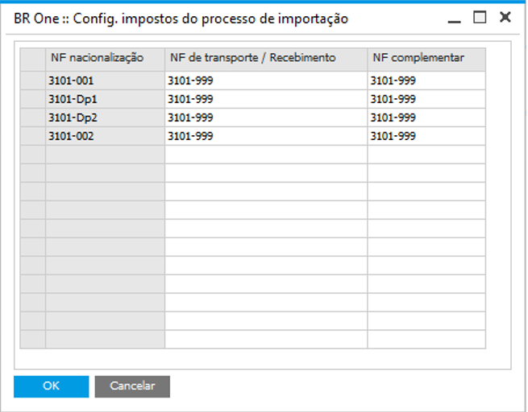

Config. impostos do processo de Importação
Para acessar a tela Config. impostos do processo de Importação, é necessario ir o menu:
Administração -> Definição -> Importação -> Config. impostos do processo de Importação
Nesta tela, o usuário deverá setar o código de imposto que será utilizado na NF de transporte e na NF complementar, de acordo com o código da NF de nacionalização.
{kind=link}
O código de imposto da coluna NF nacionalização será carregado automaticamente, seguindo as seguintes condições:
O CFOP entrada tem que começar com 3;
O CFOP saída tem que começar com 7;
A soma das alíquotas tem que ser diferente de 0;
O flag Inativo deve estar desmarcado;

Se o imposto cadastrado estiver dentro dessas condições, ele será carregado automaticamente na coluna NF nacionalização. Nas colunas NF de transporte e NF complementar , o imposto deverá ser cadastrado pelo usuário. Estará disponível para seleção o imposto que atender as seguintes condições:
O imposto a ser setado para as colunas será de acordo com o imposto da coluna NF nacionalização;
Será validado qual imposto possui o mesmo CFOP entrada e CFOP saída que o imposto NF nacionalização da linha e que tenha a soma das alíquotas igual a 0;